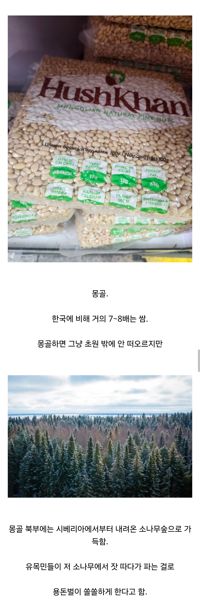

품질 좋은 잣을 싸게 살 수 있는 나라
댓글
잣는 잣나무 아님?
소나무속에 속하긴함
잣은 잣나무에서 나는게 맞는데,
외관이 소나무랑 비슷한 침엽수라서
소나무라고 한거 같음.
실제로 잣도 솔방울같은 거 안에 있는 씨앗임
솔방울 안에 씨앗 까서 먹어봐
잣이랑 똑같은맛 남. 대신 살짝 솔향이 스침
오 더 맛나겠다
나 솔의 눈 좋아하는뎅
고마버
아 쫌 재선충약 뿌렸는지 확인 좀 해 보고 먹으라고 이야기를 하란 말이여
폴란드에선 우유를
몽골에선 잣을 수입하도록 하여라!
와 잣같네 또 수입하자하면 국산 잣은 영양이 다르다 향이다르다 뭐가다르다 뭐라뭐라하겠네
에이 그런 이상한거 안해
관세를 500% 때릴뿐이야
ㄹㅇ농민들 다죽는다! 하면서 관세 500% 먹임
식량안보 어쩌고 뭐 알겠는데, 녹차는 기호품인데 대체 왜 관세가 513%인건지ㅋㅋ
관세로 국내 산업 보호!!!
조트잣
코스트코조차도 국내산 잣 가격이 어마무시하게 올랐음
360g에 7만원가까이 하던데
잣나무 재선충땜에 다 죽었으니..
이제 그마저도 먹을수있는 날이 얼마 안남은듯
소나무야 아프지마
경상도 쪽은 고속도로 타면서 보니까 산이 휑하더라
문제점 : 내륙국이라 수출하면 중국이랑 러시아 국경 통과 수수료 때문에 안 싸짐
진짜 몽골에 항구만 있었으면 우리나라랑 친해지고나서 몽골식재료 존나게 들어왔을텐데
몽골 여행 갔다 오면 무조건 사야 하는 필수품.
관세 안붙어?
잣따는거 극한직업에 나올정도로 쉽지 않던데. 사람이 저 나무 올라가서 털어내더라
잣같네 진짜!
조금있으면 국내 잣 농가 다 망하고 관세 없이 수입 해오겠더라 재선충 진짜 심각하던데
초등학생 때 잣나무에서 떨어진거 주워다가 애들이랑 시소로 찧어가지고 잣 빼다가 5일장에 팔고 그랬는데
당시 7-8만원 받은 걸로 기억하는데 그 나이대에 거금이었음 ㅎㅎ
어릴때 생산활동 ㄷㄷㄷㄷ 멋진데
학교 교목이 잣나무여서 자원이 넘쳤음 ㅋㅋㅋ
ㅋㅋㅋㅋ 시소 절구
연세가...?
가평 휴게소에서도 잣 되게 비쌋는데
잣된다
와 송화가루 좆되겠는데?
몽골잣이 맛있어요!!!


우리나라 잣나무 재선충때문에 다죽는다고 ㅠ.ㅠ
마지막 사진 보기만 했는데 코가 근질거리네
몽골 잣 맛있드라
이거보고 ㅋ검색해보니 1키로에 국내산은 14만대 몽골산은 7만원대네.
동생놈 군시절 동기후임 다 대리고 나와서 잣따서 페트병에 존나 모아 아버지 드리더라
지금 국산잣 전멸수준이라서 생산이 거의 안된다더만
조선의 트러플
친척이 선물받은 잣들 내가 싹 다 가져다 먹는데 냠냠냠
게임하면서 한 주먹씩 잣 털어 먹으면 맛있음 근데 견과류라서 먹다보면 물리더라
작년에 5만원 정도 하던거 올해 7~8만원 정도 하는거 같던데... 재선충 때문이구나..
몽골잣이 싸다고 그러길래 그때 국내산 잣이 진짜 ㅈㄴ ㅈㄴ ㅈㄴ 비싼 걸 알았음
와씨 우리나라는 지금 잣이 거이 전멸인데